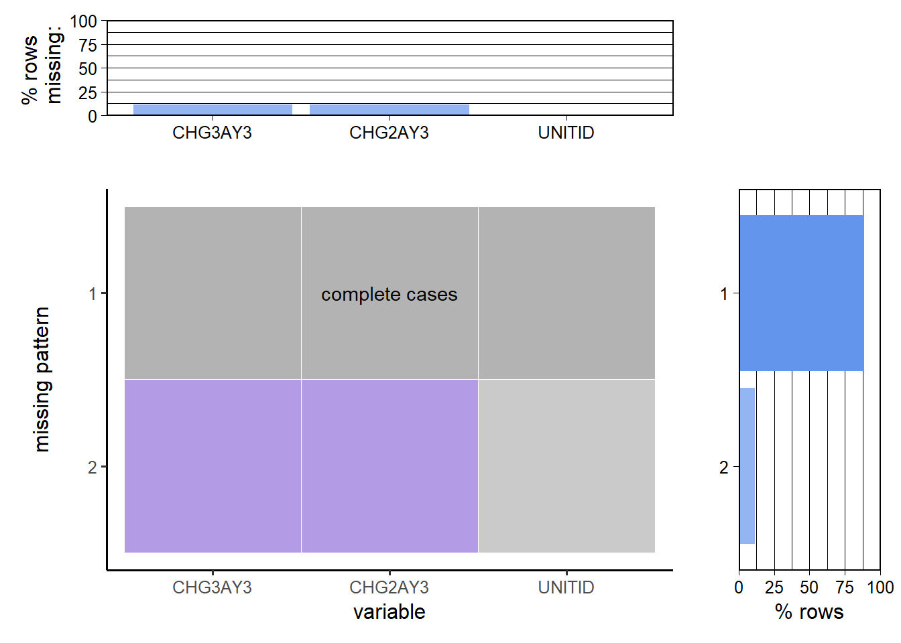
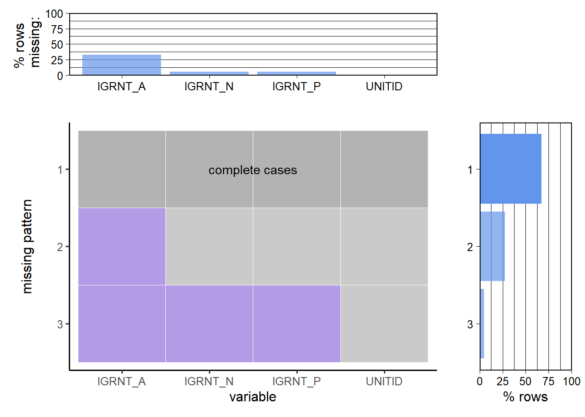
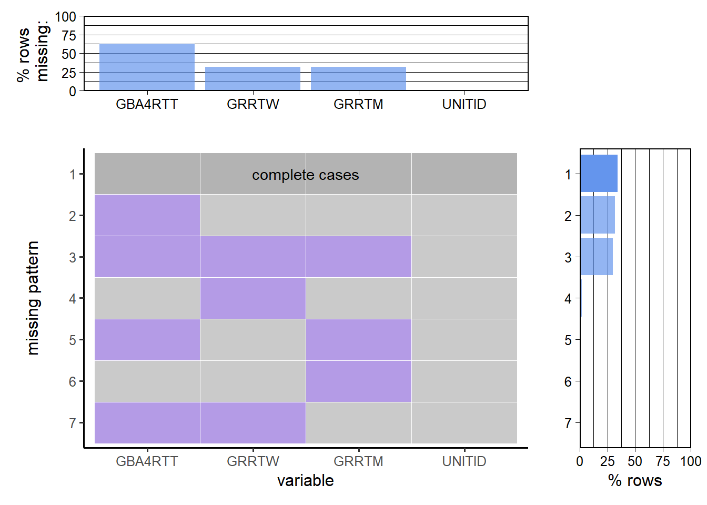
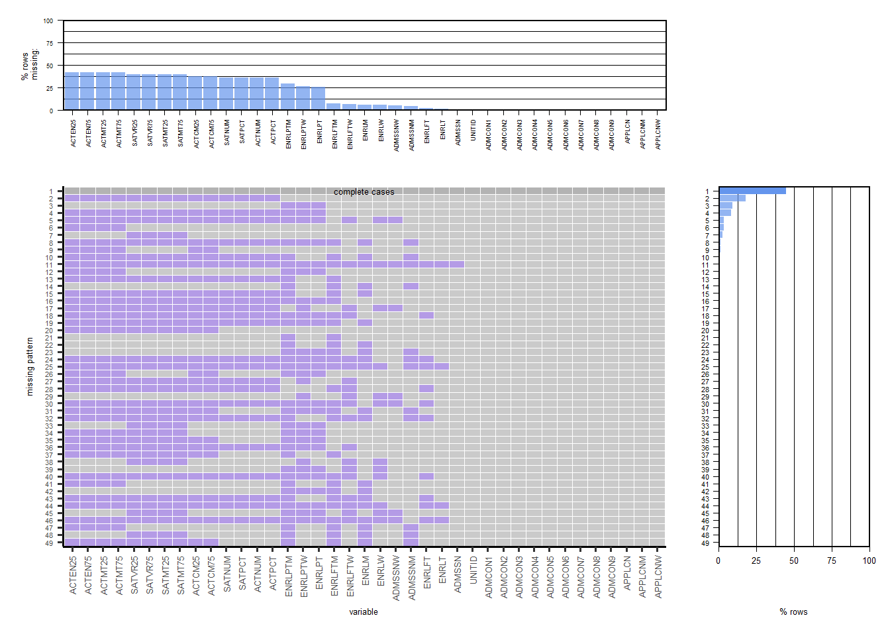

Chapter 3 Data
3.1 Sources
The U.S. Department of Education’s National Center for Education Statistics (NCES) collects the data annually.
It is collected by conducting several interrelated surveys from about 6,400 colleges, universities, and technical and vocational institutions that participate in the federal student aid programs.
Basic information about the dataset:
We have a Microsoft access database which contains multiple csv files. We use some of the files to analyze and draw conclusions to answer our question.
3.2 Cleaning / transformation
library(dplyr)
library(tibble)
library(tidyr)
library(ggplot2)
library(forcats)
library(RODBC)
library(reshape2)
library(MASS)
library(plotly)
library(gtable)
library(usmap)
library(ggplot2)
library(choroplethr)
library(choroplethrMaps)DRIVERINFO <- "Driver={Microsoft Access Driver (*.mdb, *.accdb)};"
MDBPATH <- "C:\\Users\\kanak\\Desktop\\EDAV Final Project\\Data\\IPEDS201920.accdb"
PATH <- paste0(DRIVERINFO, "DBQ=", MDBPATH)
channel <- odbcDriverConnect(PATH)
adm2019 <- sqlQuery(channel,
"SELECT * FROM [ADM2019];",
stringsAsFactors = FALSE)
hd2019 <- sqlQuery(channel,
"SELECT * FROM [HD2019];",
stringsAsFactors = FALSE)
ic2019_ay <- sqlQuery(channel,
"SELECT * FROM [IC2019_AY];",
stringsAsFactors = FALSE)
sfa1819_p1 <- sqlQuery(channel,
"SELECT * FROM [SFA1819_P1];",
stringsAsFactors = FALSE)
drvgr2019 <- sqlQuery(channel,
"SELECT * FROM [DRVGR2019];",
stringsAsFactors = FALSE)
ic2019_ay <- ic2019_ay[c('UNITID', 'CHG3AY3', 'CHG2AY3')]
sfa1819_p1 <- sfa1819_p1[c('UNITID', 'IGRNT_N', 'IGRNT_P', 'IGRNT_A')]
drvgr2019 <- drvgr2019[c('UNITID', 'GBA4RTT', 'GRRTM','GRRTW')]
hd2019 <- hd2019[c('UNITID', 'INSTNM', 'STABBR')]We use the odbcDriverConnect function from the RODBC library to transform the data from access database format into a usable dataframe in R. We didn’t require any data cleaning or transformation before EDA.
3.3 Missing value analysis
colSums(is.na(adm2019)) %>%
sort(decreasing = TRUE)## ACTEN25 ACTEN75 ACTMT25 ACTMT75 SATVR25 SATVR75 SATMT25 SATMT75 ACTCM25 ACTCM75 SATNUM SATPCT ACTNUM ACTPCT ENRLPTM ENRLPTW ENRLPT ENRLFTM
## 840 840 840 840 791 791 791 791 757 757 722 722 722 722 588 535 523 148
## ENRLFTW ENRLM ENRLW ADMSSNW ADMSSNM ENRLFT ENRLT ADMSSN UNITID ADMCON1 ADMCON2 ADMCON3 ADMCON4 ADMCON5 ADMCON6 ADMCON7 ADMCON8 ADMCON9
## 127 115 111 104 94 39 23 18 0 0 0 0 0 0 0 0 0 0
## APPLCN APPLCNM APPLCNW
## 0 0 0colSums(is.na(ic2019_ay)) %>%
sort(decreasing = TRUE)## CHG3AY3 CHG2AY3 UNITID
## 458 458 0colSums(is.na(sfa1819_p1)) %>%
sort(decreasing = TRUE)## IGRNT_A IGRNT_N IGRNT_P UNITID
## 1922 294 294 0colSums(is.na(drvgr2019)) %>%
sort(decreasing = TRUE)## GBA4RTT GRRTW GRRTM UNITID
## 3499 1774 1773 0colSums(is.na(hd2019)) %>%
sort(decreasing = TRUE)## UNITID INSTNM STABBR
## 0 0 0Duplicates
sum(duplicated(adm2019$UNITID))## [1] 0sum(duplicated(ic2019_ay$UNITID))## [1] 0sum(duplicated(sfa1819_p1$UNITID))## [1] 0sum(duplicated(drvgr2019$UNITID))## [1] 0sum(duplicated(hd2019$UNITID))## [1] 0Using plot_missing from redav library: (The function outputs a graph with overlapping axes and we were not able to read the x-labels. So we copy-pasted the code and rotated the x axis labels by 90 degrees, and changes the size of labels accordingly for our data)
library(redav)
plot_missing(ic2019_ay)
plot_missing(sfa1819_p1)
plot_missing(drvgr2019)
ic2019_ay <- ic2019_ay %>% drop_na(colnames(ic2019_ay))
colSums(is.na(ic2019_ay)) %>%
sort(decreasing = TRUE)## UNITID CHG3AY3 CHG2AY3
## 0 0 0sfa1819_p1 <- sfa1819_p1 %>% drop_na(colnames(sfa1819_p1))
colSums(is.na(sfa1819_p1)) %>%
sort(decreasing = TRUE)## UNITID IGRNT_N IGRNT_P IGRNT_A
## 0 0 0 0drvgr2019_A <- drvgr2019 %>% drop_na(c('UNITID', 'GRRTW', 'GRRTM'))
colSums(is.na(drvgr2019_A)) %>%
sort(decreasing = TRUE)## GBA4RTT UNITID GRRTM GRRTW
## 1763 0 0 0drvgr2019_B <- drvgr2019 %>% drop_na('GBA4RTT')
colSums(is.na(drvgr2019_B)) %>%
sort(decreasing = TRUE)## GRRTW GRRTM UNITID GBA4RTT
## 105 55 0 0hd2019 <- hd2019 %>% drop_na(colnames(hd2019))
colSums(is.na(hd2019)) %>%
sort(decreasing = TRUE)## UNITID INSTNM STABBR
## 0 0 0write.csv(ic2019_ay, "./Data/ic2019_ay.csv", row.names = FALSE)
write.csv(sfa1819_p1, "./Data/sfa1819_p1.csv", row.names = FALSE)
write.csv(drvgr2019_A, "./Data/drvgr2019_A.csv", row.names = FALSE)
write.csv(drvgr2019_B, "./Data/drvgr2019_B.csv", row.names = FALSE)
write.csv(hd2019, "./Data/hd2019.csv", row.names = FALSE)x = adm2019
percent = TRUE
na_count_all <- data.frame(is.na(x)) %>%
dplyr::group_by_all() %>%
dplyr::count(name = "count", sort = TRUE) %>%
dplyr::ungroup() %>%
tibble::rownames_to_column("pattern")
na_count_all <- na_count_all %>%
dplyr::mutate(pattern = factor(.data$pattern, levels = nrow(na_count_all):1))
# count the number of columns with missing values; will be used later to determine if there's a "none missing" pattern
na_count_all <- na_count_all %>%
dplyr::rowwise() %>%
dplyr::mutate(num_missing_cols = sum(dplyr::c_across(where(is.logical))))
# data frame for missing patterns bar chart
na_count_by_pattern <- na_count_all[,c("pattern", "count", "num_missing_cols")]
na_count_by_pattern$none_missing <- ifelse(na_count_by_pattern$num_missing_cols == 0, TRUE, FALSE)
# data frame for missing by column bar chart
na_count_by_column <- data.frame(is.na(x)) %>%
colSums() %>%
sort(decreasing = TRUE) %>%
tibble::enframe(name = "var", value = "count")
# tidy and sort na_count_all by column counts
na_count_all_tidy <- na_count_all %>%
tidyr::pivot_longer(where(is.logical), names_to = "variable") %>%
dplyr::mutate(variable = factor(.data$variable, levels = na_count_by_column$var)) %>%
dplyr::mutate(none_missing = ifelse(.data$num_missing_cols == 0, TRUE, FALSE))
# main plot
main_plot <- ggplot2::ggplot(na_count_all_tidy, ggplot2::aes(.data$variable, .data$pattern, fill = factor(.data$value), alpha = .data$none_missing)) +
ggplot2::geom_tile(color = "white") +
ggplot2::scale_fill_manual(values = c("grey70", "mediumpurple")) +
ggplot2::scale_alpha_manual(values = c(.7, 1)) +
ggplot2::ylab("missing pattern") +
ggplot2::guides(fill = "none", alpha = "none") +
ggplot2::theme_classic(12) +
ggplot2::theme(axis.text.x = element_text(angle = 90, vjust = 0.5, hjust=1,size=5), axis.text.y = element_text(size = 4), axis.title = element_text(size=5))
# check for "none missing" pattern
none_missing_pattern <- na_count_by_pattern %>%
dplyr::filter(.data$none_missing) %>% dplyr::pull(.data$pattern)
if (length(none_missing_pattern) > 0) {
main_plot <- main_plot +
ggplot2::annotate("text", x = (ncol(na_count_all)-2)/2,
y = nrow(na_count_all) + 1 - as.numeric(as.character(none_missing_pattern)),
label = "complete cases", size=1.7)
}
# margin plots
denom <- ifelse(percent, nrow(x)/100, 1)
missing_by_column_plot <- ggplot2::ggplot(na_count_by_column, ggplot2::aes(forcats::fct_inorder(.data$var), .data$count/denom)) +
ggplot2::geom_col(fill = "cornflowerblue", alpha = .7) +
ggplot2::scale_y_continuous(expand = c(0, 0), n.breaks = 3) +
ggplot2::xlab("") +
ggplot2::ylab(ifelse(percent, "% rows \n missing:", "num rows \n missing:")) +
ggplot2::theme_linedraw(12) +
ggplot2::theme(panel.grid.major.x = ggplot2::element_blank(),
panel.grid.minor.x = ggplot2::element_blank(),axis.text.x = element_text(angle = 90, vjust = 0.5, hjust=1), text = element_text(size=4), axis.title = element_text(size=5))
missing_by_pattern_plot <-
ggplot2::ggplot(na_count_by_pattern, ggplot2::aes(.data$pattern, .data$count/denom, alpha = .data$none_missing)) +
ggplot2::geom_col(fill = "cornflowerblue") +
ggplot2::coord_flip() +
ggplot2::scale_y_continuous(expand = c(0, 0), n.breaks = 3) +
ggplot2::scale_alpha_manual(values = c(.7, 1)) +
ggplot2::xlab("") +
ggplot2::ylab(ifelse(percent, "% rows", "row count")) +
ggplot2::guides(alpha = "none") +
ggplot2::theme_linedraw(12) +
ggplot2::theme(panel.grid.major.y = ggplot2::element_blank(),
panel.grid.minor.y = ggplot2::element_blank(),axis.text.y = element_text(size = 4),axis.text.x = element_text(size = 5), axis.title = element_text(size=5))
if (percent) {
missing_by_column_plot <- missing_by_column_plot +
ggplot2::scale_y_continuous(expand = c(0, 0), n.breaks = 5,
limits = c(0, 100))
missing_by_pattern_plot <- missing_by_pattern_plot +
ggplot2::scale_y_continuous(expand = c(0, 0), n.breaks = 5,
limits = c(0, 100))
}
missing_by_column_plot + patchwork::plot_spacer() +
main_plot + missing_by_pattern_plot +
patchwork::plot_layout(widths = c(4, 1), heights = c(1, 4)) ENRLT is the total number of enrolled students, and ENRLM is the total number of enrolled men; the rows starting with SAT and ACT give the 25th percentile and 75th percentile scores in tests, and these are a main part of our analysis. Without these values, we cannot form meaningful hypotheses, so we are removing the schools that didn’t provide these data.
adm2019 <- adm2019 %>% drop_na(c(ENRLT,ENRLM,SATVR25,SATVR75,SATMT25,SATMT75,ACTCM25,ACTCM75,ACTEN25,ACTEN75,ACTMT25,ACTMT75))
colSums(is.na(adm2019)) %>%
sort(decreasing = TRUE)## ENRLPTM ENRLPTW ENRLPT ENRLW ENRLFTM ENRLFTW ADMSSNW UNITID ADMCON1 ADMCON2 ADMCON3 ADMCON4 ADMCON5 ADMCON6 ADMCON7 ADMCON8 ADMCON9 APPLCN
## 187 186 184 3 3 3 2 0 0 0 0 0 0 0 0 0 0 0
## APPLCNM APPLCNW ADMSSN ADMSSNM ENRLT ENRLM ENRLFT SATNUM SATPCT ACTNUM ACTPCT SATVR25 SATVR75 SATMT25 SATMT75 ACTCM25 ACTCM75 ACTEN25
## 0 0 0 0 0 0 0 0 0 0 0 0 0 0 0 0 0 0
## ACTEN75 ACTMT25 ACTMT75
## 0 0 0The majority missing values are in Part time student enrollment statistics. These are not very pertinent to our analysis, so we are dropping these columns. Enrollment of men and total enrollment determine the women enrollment, so dropping this column too, and calculating it using (Total enrollment - men enrollment) instead. After this, only missing values are 3 rows in full-time enrollment of men. These 3 rows are dropped to get a cleaned dataframe.
adm2019 <- select(adm2019, -ENRLPTM)
adm2019 <- select(adm2019, -ENRLPTW)
adm2019 <- select(adm2019, -ENRLPT)
adm2019$ENRLW = adm2019$ENRLT - adm2019$ENRLM
adm2019$ADMSSNW = adm2019$ADMSSN - adm2019$ADMSSNM
adm2019 <- adm2019 %>% drop_na(ENRLFTM)
adm2019$ENRLFTW = adm2019$ENRLFT - adm2019$ENRLFTM
colSums(is.na(adm2019)) %>%
sort(decreasing = TRUE)## UNITID ADMCON1 ADMCON2 ADMCON3 ADMCON4 ADMCON5 ADMCON6 ADMCON7 ADMCON8 ADMCON9 APPLCN APPLCNM APPLCNW ADMSSN ADMSSNM ADMSSNW ENRLT ENRLM
## 0 0 0 0 0 0 0 0 0 0 0 0 0 0 0 0 0 0
## ENRLW ENRLFT ENRLFTM ENRLFTW SATNUM SATPCT ACTNUM ACTPCT SATVR25 SATVR75 SATMT25 SATMT75 ACTCM25 ACTCM75 ACTEN25 ACTEN75 ACTMT25 ACTMT75
## 0 0 0 0 0 0 0 0 0 0 0 0 0 0 0 0 0 0write.csv(adm2019, "./Data/adm2019.csv", row.names = FALSE)There are tables that have processed admission statistics like percent yields in admission for each gender, but we are using the raw data collected from the survey and analyzing.